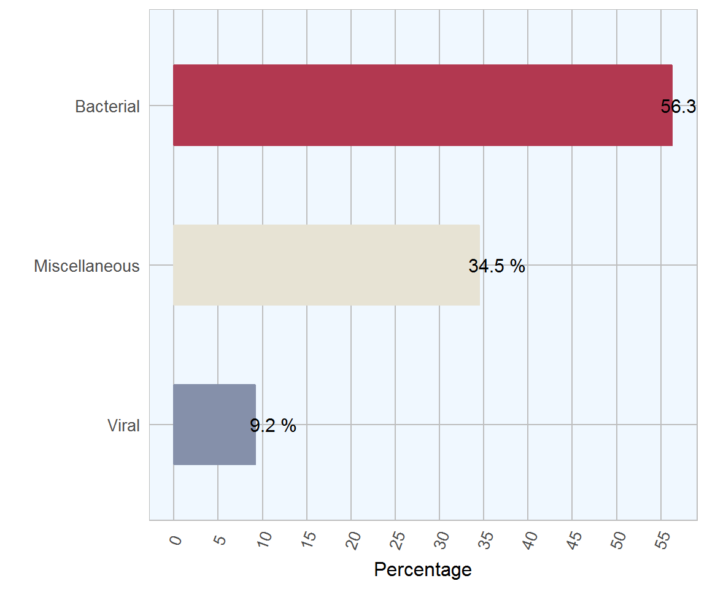
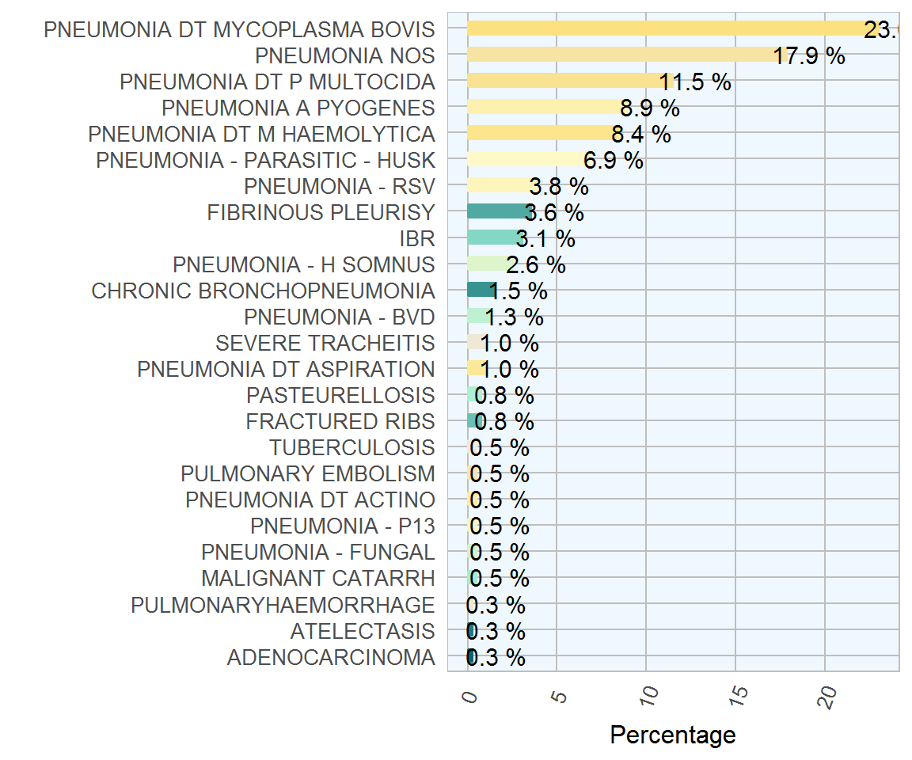
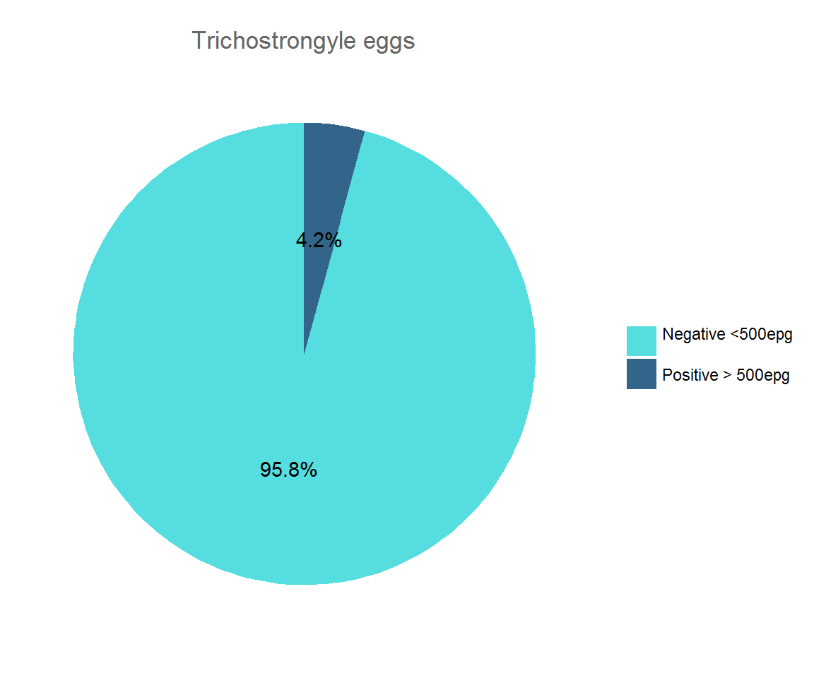

Chapter 4 Bovine Respiratory Disease (BRD)
4.1 Diagnoses by Group
| Category | Count | Percentage |
|---|---|---|
| Bacterial | 220 | 56.3 |
| Miscellaneous | 135 | 34.5 |
| Viral | 36 | 9.2 |

Figure 4.1: The most commom diagnosic groups on post-mortem examinations of bovine respiratory disease by AFBI during 2017 (n= 391 )
4.1.1 Bovine Respiratory Disease Diagnoses
| Category | Count | Percentage |
|---|---|---|
| PNEUMONIA DT MYCOPLASMA BOVIS | 90 | 23.0 |
| PNEUMONIA NOS | 70 | 17.9 |
| PNEUMONIA DT P MULTOCIDA | 45 | 11.5 |
| PNEUMONIA A PYOGENES | 35 | 8.9 |
| PNEUMONIA DT M HAEMOLYTICA | 33 | 8.4 |
| PNEUMONIA - PARASITIC - HUSK | 27 | 6.9 |
| PNEUMONIA - RSV | 15 | 3.8 |
| FIBRINOUS PLEURISY | 14 | 3.6 |
| IBR | 12 | 3.1 |
| PNEUMONIA - H SOMNUS | 10 | 2.6 |
| CHRONIC BRONCHOPNEUMONIA | 6 | 1.5 |
| PNEUMONIA - BVD | 5 | 1.3 |
| PNEUMONIA DT ASPIRATION | 4 | 1.0 |
| SEVERE TRACHEITIS | 4 | 1.0 |
| FRACTURED RIBS | 3 | 0.8 |
| PASTEURELLOSIS | 3 | 0.8 |
| MALIGNANT CATARRH | 2 | 0.5 |
| PNEUMONIA - FUNGAL | 2 | 0.5 |
| PNEUMONIA - P13 | 2 | 0.5 |
| PNEUMONIA DT ACTINO | 2 | 0.5 |
| PULMONARY EMBOLISM | 2 | 0.5 |
| TUBERCULOSIS | 2 | 0.5 |
| ADENOCARCINOMA | 1 | 0.3 |
| ATELECTASIS | 1 | 0.3 |
| PULMONARYHAEMORRHAGE | 1 | 0.3 |

Figure 4.2: Relative frequency of diagnoses in bovine respiratory disease recorded by AFBI during 2017, (n= 391 )
4.1.2 Lungworm

Figure 4.3: Evolution of the number of lungworm respiratory disease recorded by AFBI during 2017, (n= 27 )